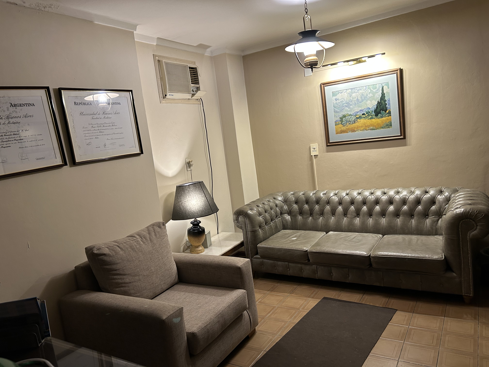

Un espacio pensado para la calma, la escucha y la arteterapia
Aquí comienza la experiencia de Landia’s Musik desde un enfoque clínico y creativo. Este consultorio combina la psiquiatría con la arteterapia y la música, ofreciendo un entorno seguro y acogedor para acompañar cada proceso personal.